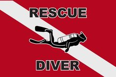

Rescue
Diver

Diver
Es un curso pensado para lograr mayor control y seguridad en el agua. Priorizando el buceo con el compañero. Aprendiendo las técnicas correctas de rescate y auto-rescate. Recomendado para todo buzo. Se Requiere contar con un curso Actualizado de Primeros Auxilios Básicos.